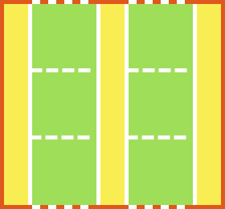

Why CSS Grid is a game-changer for web design


Web layouts over the years


2017: the year of CSS grid
Team Layout

And more...
Grid versus Flexbox?
Wrong question
Grid AND Flexbox


Flexbox ➡ single dimension


What is CSS grid?
Defines a two-dimensional grid-based layout system, optimized for user interface design.
Basic terminology

Flexbox and Grid
Based on the container-child relationship
“Grid works from the container in, other layout methods start with the item”
—Rachel Andrew
Layout technique: inline-block
Item A
Item B
Item C
Item D
Item E
Item F
Layout technique: float
Item A
Item B
Item C
Item D
Item E
Item F
Layout technique: flex
Item A
Item B
Item C
Item D
Item E
Item F
“Grid is the only layout technique that establishes a relationship between rows and columns of grid items.”
CSS grid basics
Define your grid.

Place items in the grid.

Properties on the Grid container
Defining a grid
<div class="grid1">
<div class="grid1__item">
<p>Item A</p>
</div>
<div class="grid1__item">
<p>Item B</p>
</div>
<div class="grid1__item">
<p>Item C</p>
</div>
<div class="grid1__item">
<p>Item D</p>
</div>
<div class="grid1__item">
<p>Item E</p>
</div>
<div class="grid1__item">
<p>Item F</p>
</div>
</div>Item A
Item B
Item C
Item D
Item E
Item F
Naming grid lines
Item A
Item B
Item C
Item D
Item E
Item F
“Cede control of your designs to the browsers that render them.”
The fr unit
Represents a fraction of the free space in the grid container.
Item A
Item B
Item C
Fluid CSS grid
.container {
display: grid;
grid-template-columns: repeat(3, 3fr 2fr);
}The minmax() function
Defines a size range for columns or rows in the grid.
Item A
Item B
Item C
The repeat() function
To specify a large number of columns or rows that follow a similar pattern
Item
Item
Item
Item
Item
Item
Item
Item
auto-fill vs. auto-fit
Allow browser to determine how many tracks to create depending on track size.

repeat(auto-fill, 100px);repeat(auto-fit, 100px);auto-fit collapses empty tracks.
auto-fill versus auto-fit
A
B
C
D
E
F
Responsive grid without media queries
.container {
display: grid;
grid-template-columns: repeat(auto-fill, minmax(10em, 1fr));
}Explicit Grid and Implicit Grid

.grid-container {
display: grid;
grid-template-columns: 150px 150px 150px; /* three columns */
grid-template-rows: 150px 150px; /* two rows */
}
.item {
grid-column: 5 / 6; /* grid-column-start: 5; grid-column-end: 6; */
grid-row: 2 / 3; /* grid-row-start: 2; grid-row-end: 3; */
}The browser will create an implicit grid to hold items placed outside the grid.
Aligning your grid items
| Property | Axis | Aligns | Applies to |
|---|---|---|---|
justify-content |
main/inline | content within element  |
block containers, flex containers and grid containers |
align-content |
cross/block | ||
justify-self |
inline | element within parent  |
block-level boxes, absolutely-positioned boxes and grid items |
align-self |
cross/block | absolutely-positioned boxes, flex items and grid items |
|
justify-items |
inline | items inside box  |
block containers and grid containers |
align-items |
cross/block | flex-containers and grid-containers |
Source: CSS Box Alignment Module Level 3
justify/align-content
content-distribution properties
| Values | justify-content |
align-content |
|---|---|---|
center |
 |
 |
start |
 |
 |
end |
 |
 |
space-around |
 |
 |
space-between |
 |
 |
space-evenly |
 |  |
justify/align-self
self-alignment properties
justify/align-items
defaults for justify/align-self


Self-alignment properties, maybe?

Flexbox to the rescue

Properties on the grid item
Grid placement with grid lines / named lines
grid-template-columns: [first sidebar-start] 250px [content-start] 1fr [last];
grid-template-rows: [first header-start] 100px [content-start] 1fr [footer-start] 100px [last];
Using grid-column and grid-row
(1) 🍏
(2) 🍊
(3) 🥥
(4) 🥑
(5) 🍇
(6) 🍌
Grid placement with named areas

.grid-container {
display: grid;
grid-template-areas: "logo stats"
"score stats"
"board board"
"... controls";
}
.logo { grid-area: logo; }
.score { grid-area: score; }
.stats { grid-area: stats; }
.board { grid-area: board; }
.controls { grid-area: controls; }Using grid areas
Item A
Item B
Item C
Vertical whitespace


.steuergerät {
grid-gap: 0.5em;
grid-template-columns: 50% 50%;
grid-template-areas: "title title"
"text text"
"key key"
"detail1 detail2"
"detail3 detail4";
}
@media screen and (min-aspect-ratio: 1/1) and (min-height: 22em) {
.steuergerät {
grid-template-columns: 18.75em 1fr 1fr 1fr;
grid-template-rows: calc((100vh - 3em) / 3) calc((100vh - 3em) / 3) calc((100vh - 3em) / 3);
grid-template-areas: "title detail1 key key"
"text detail2 key key"
"text detail3 detail4 braun";
}
}
@media screen and (min-aspect-ratio: 8/5) and (min-height: 36em) {
.steuergerät {
grid-template-columns: 17.5em 1fr 3fr 1fr 1fr;
grid-template-rows: calc((100vh - 3em) / 3) calc((100vh - 3em) / 3) calc((100vh - 3em) / 3);
grid-template-areas: "title . key . ."
"text detail1 key detail2 detail3"
"text . . detail4 .";
}
}Overlap
.container {
display: grid;
grid-template-columns: repeat(9, 1.25em);
grid-template-rows: repeat(6, 1.25em);
}
h2 {
grid-row: 3 / 5;
grid-column: 1 / 10;
}
.container::before {
grid-row: 1 / 7;
grid-column: 1 / 7;
}
.container::after {
grid-row: 1 / 7;
grid-column: 4 / 10;
}Building a grid layout

Design credit: Drew Sullivan


“Websites do NOT have to look the same in every browser.”

main {
max-width: 45em;
margin: 0 auto;
position: relative;
padding: 1em;
}
_:-ms-input-placeholder, :root main {
display: block;
}
h1 {
margin-bottom: 0.25em;
}
h2 {
margin-bottom: 1em;
}
.about {
margin-bottom: 1em;
}
a {
margin-bottom: 2em;
}
button {
padding: 1em 2em;
position: absolute;
right: 1em;
bottom: 1em;
}
@supports (display:grid) {
@media (min-width: 42em) and (min-height: 27em) {
main {
max-width: none;
padding: 0;
display: grid;
grid-template-columns: 2fr minmax(10em, max-content) minmax(14em, max-content) minmax(1em, 1fr) fit-content(28em) calc(2em + 0.5vw);
grid-template-rows: 35vh 40vh 15vh 10vh;
}
h1 {
grid-column: 3 / 6;
grid-row: 1 / 2;
z-index: 2;
padding-left: 0.25em;
margin-bottom: initial;
}
h2 {
grid-row: 1 / -1;
grid-column: 6 / 7;
writing-mode: vertical-rl;
margin-bottom: initial;
color: $text;
}
hr {
grid-column: 5 / 6;
grid-row: 2;
height: 6px;
background-color: $text;
width: 20ch;
}
.about {
grid-column: 5 / 6;
grid-row: 2;
align-self: end;
padding-bottom: 4vh;
margin-bottom: initial;
}
a {
grid-column: 5 / 6;
justify-self: end;
align-self: center;
margin-bottom: initial;
&::before {
content: '';
display: block;
height: 4px;
background-color: $accent;
width: 4ch;
margin-bottom: 1em;
}
}
img {
grid-column: 1 / 4;
grid-row: 1 / 4;
}
.location {
grid-column: 3 / 4;
grid-row: 3 / 4;
z-index: 2;
background: $main;
text-align: center;
display: flex;
p {
margin: auto;
}
}
button {
grid-column: 2 / 3;
grid-row: 4 / 5;
position: initial;
padding: 0;
}
}
@media (min-width: 48em) {
hr {
opacity: 1;
}
}
}Fallback with feature queries
A conditional group rule whose condition tests whether the user agent supports CSS property:value pairs.
main {
display: flex;
flex-wrap: wrap;
justify-content: space-between;
}
.title {
width: 100%;
}
.card {
flex: auto;
min-width: 12em;
height: 12em;
}@supports (display:grid) {
main {
display: grid;
grid-template-columns: repeat(auto-fill, minmax(8em, 1fr));
grid-auto-rows: 8em;
}
.title {
width: initial;
}
.card {
min-width: initial;
height: initial;
}
@media screen and (max-width: 383px) {
main {
grid-template-rows: 3em repeat(auto-fill, 8em);
}
}
@media screen and (min-aspect-ratio: 1/1) {
main {
grid-template-columns: repeat(4, minmax(25vw, 5em));
grid-template-rows: repeat(3, calc(100vh / 3));
grid-template-areas: "a b c ."
"d e . f"
"g . h i";
}
}
}Browser support for @supports

Anatomy of a feature query
.selector {
/* Styles that are supported in old browsers */
}
@supports (property:value) {
.selector {
/* Styles for browsers that support the specified property */
}
}


“CSS isn't a programming language. It's a stylesheet language. We shouldn't expect it to behave like a programming language. It has its own unique landscape and structures, ones that people with programming language mental maps might not expect.”
—Danielle Huntrods
Shape the web we use and build for
- CSS specifications are all on GitHub
- Raising browser bugs can and does make a difference
- Write and talk about CSS features
- Browser developers are people too, provide feedback and be nice about it.


Demos and examples
Useful references
- CSS Grid Layout Module Level 1
- Codrops CSS Grid reference
- Grid by Example
- Learn CSS Grid
- Grid Auto-Placement Is Ready
- Automatizing the Grid
- Deep Dive into Grid Layout Placement
- CSS Grid Layout and positioned items
- The Story of CSS Grid, from Its Creators
- CSS Grid Layout is Here to Stay
- The New Layout Standard For The Web: CSS Grid, Flexbox And Box Alignment